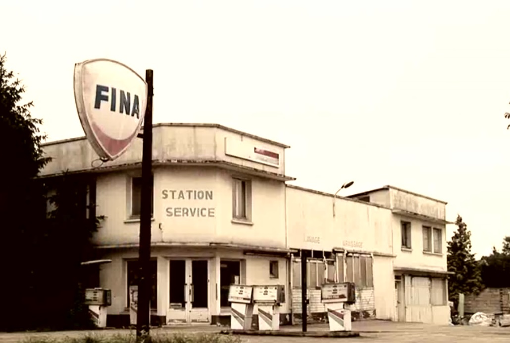
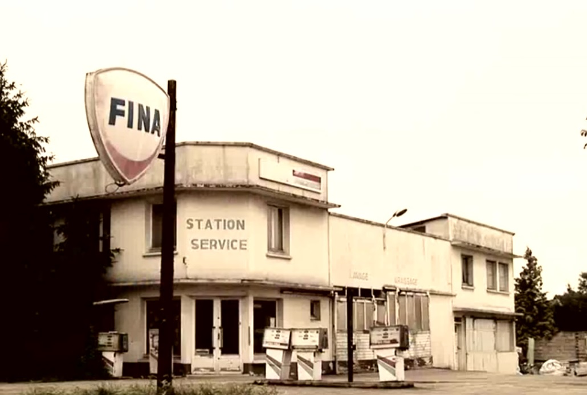
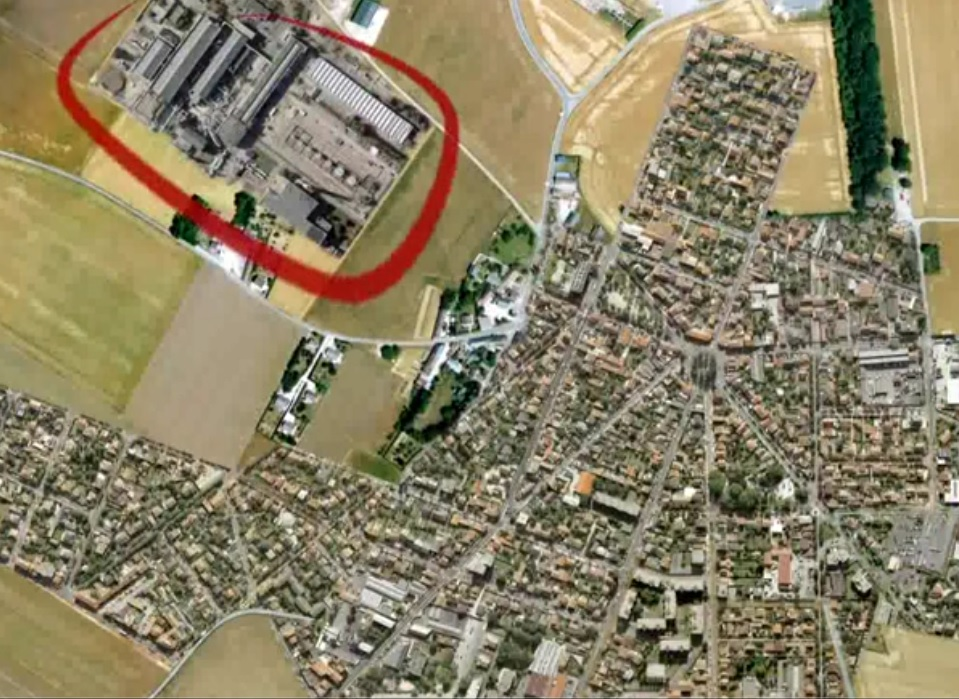
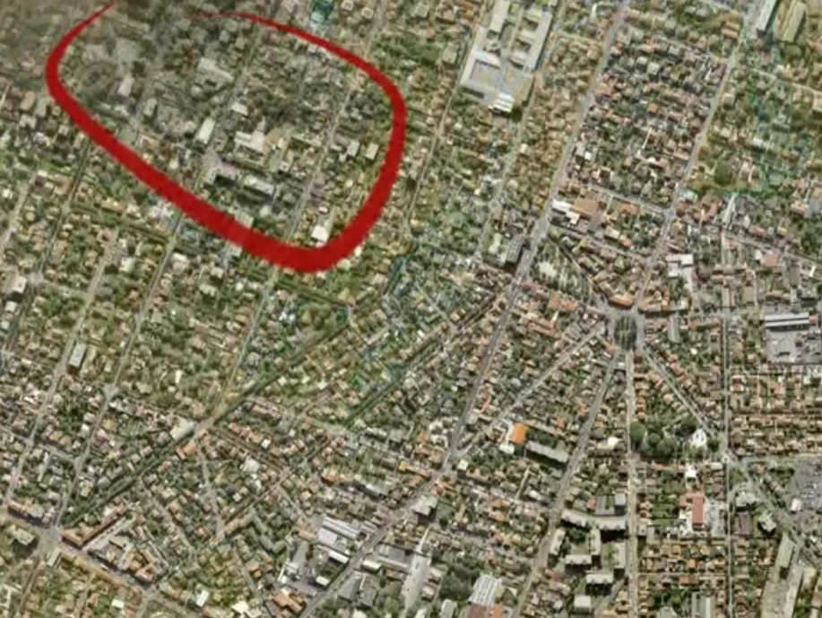

>Audit pollution des sols EVAL phase 1, consultez-nous à l'onglet contact.
Réalisez votre audit pollution des sols EVAL phase 1, dans le cadre d'une vente ou d'une location.
L'ordre des notaires (des affaires ont fait jurisprudence), les obligations du grenelle de l'Environnement et le code de l'environnement ( L.514-20 ) recommandent un diagnostic pollution des sols.
Connaître les activités passées pour s'en prévenir :

En quelques dizaines d'années, l'importante usine entourée de rouge a disparu pour laisser place à des habitations.
L'objectif de la mission :
l’objectif de la mission est d’identifier des zones susceptibles d’être polluées au regard des activités, des produits et de la gestion environnementale (déchets, stockages, etc) passée et actuelle au droit du terrain Lla prestation comporte une visite, une revue documentaire et une étude historique (sur la base des documents transmis). Des investigations intrusives ou d’échantillonnages systématiques sont exclues à ce stade.
Toutefois des échantillons peuvent être nécessaires dans certains cas.